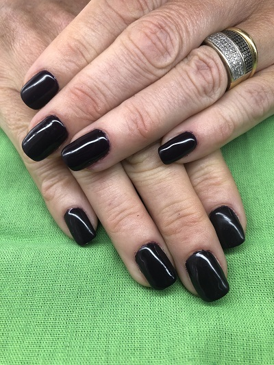

Belleza de manos con esmaltado tradicional
Consiste en la realización de una limpieza, empuje o eliminación de cutícula, limado de las uñas para darle la forma y el largo deseado y esmaltado de las uñas con esmaltes tradicionales. El servicio tiene una duración de 1:00 hora.
